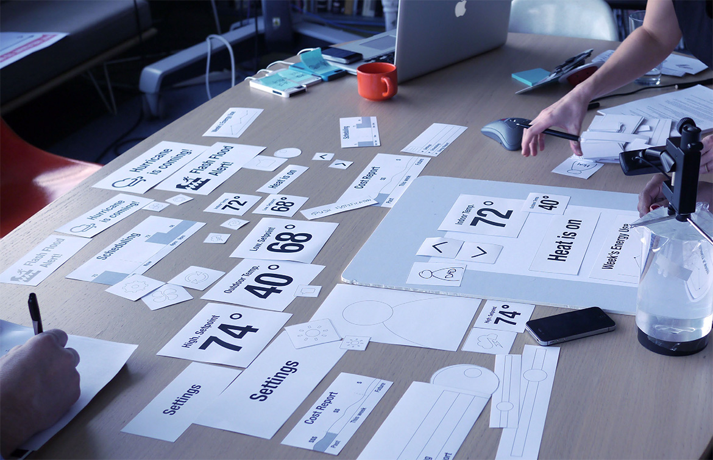

WiserAir
The goal of this program is to create an innovative home energy monitoring and control platform that enables the services that utilities require while delivering an intuitive and desirable user experience.
Design Process Outlined
User Research Sessions
We held two user research sessions where we met with 11 people who are current users of different thermostats. We conducted various exercises to understand their underlying needs, desires, and expectations around their thermostat and energy use. They used mobile and device prototypes while we observed and received feedback on the interactions, flows and visual design. We synthesized our learnings as we developed our ideas.
Main Design goals
Wiser Air transforms Wiser’s partnerships with utility companies, weather forecast providers (DTN) and energy data providers (AutoGrid and EcoFactor) into a simple, compelling experience for users. It turns the complex realities of energy management into something any homeowner will enjoy.
- Contextual Intelligence
- A Platform to Learn and Teach
- Emotional Appeal
User Interview Session
I’d love to see what the weather is like as I’m walking out the door. If my thermostat can warn me that I need an umbrella that would be great.
Most companies make the mistake of giving too much information to the user. Providing the right information is what creates a desirable experience.
There’s something really nice about my thermostat knowing my name and starting the day with a personalized message.
Users don’t want to constantly tweak and monitor their thermostats. They want to set it and forget it. Things need to happen in the background.
Instantaneous feedback on how much energy my AC was using could have saved me hundreds of dollars on my monthly bill.
Application Design
We try to capture key elements of the visual and interaction design for the application and the thermostat design. Our work focuses on the “hero moments” of the interaction - the exchanges that people will both use most frequently and those that, while they may be experienced less frequently, have a large impact on the overall experience.